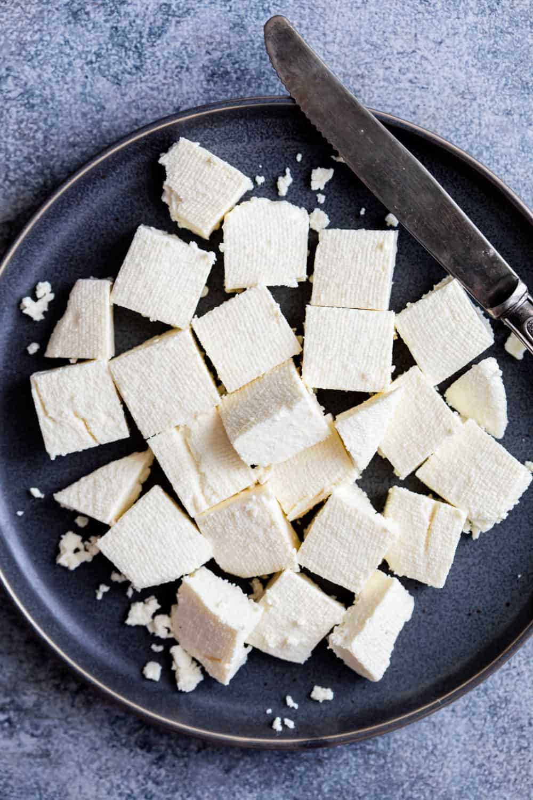

This dish is known for its creamy texture and mildly sweet flavor, making it a favorite in many households.
Ingredients
- 200g paneer cubes
- 1 cup tomato puree
- 2 tbsp butter
- 1/2 cup cream
- Spices (garam masala, chili powder, salt)
Steps
- Heat butter in a pan and add tomato puree.
- Add spices and cook until oil separates.
- Add paneer cubes and simmer.
- Stir in cream and cook for 5 minutes.
Time: 30 mins | Difficulty: Easy